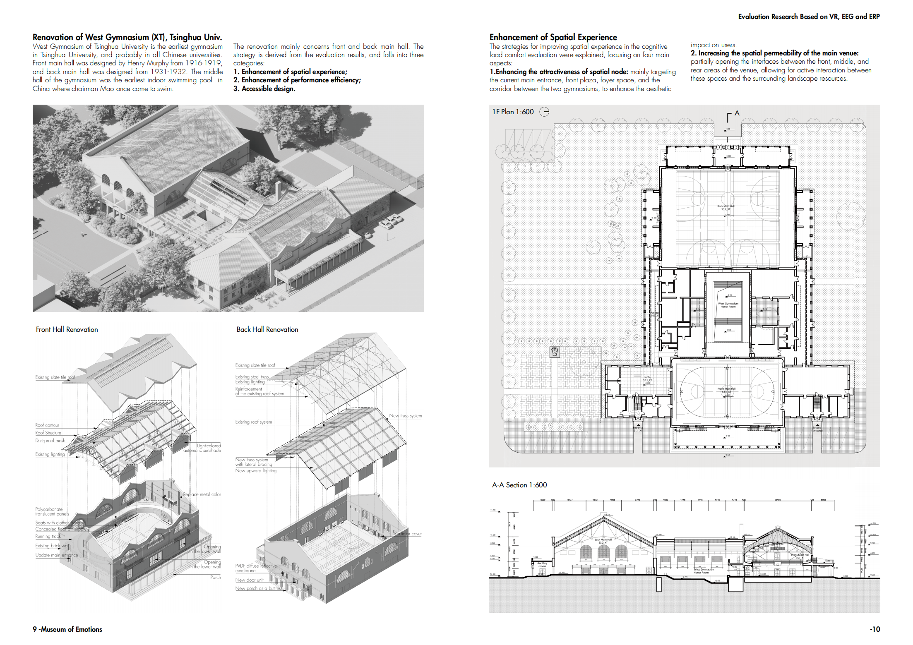
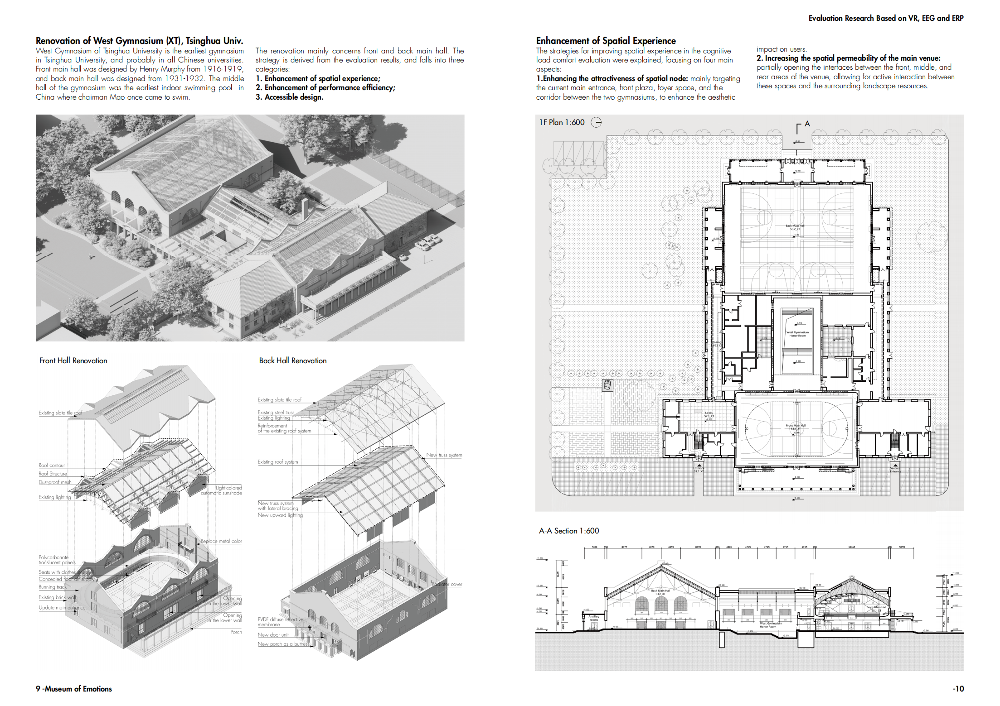
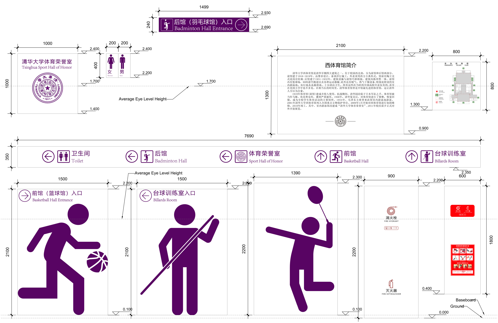
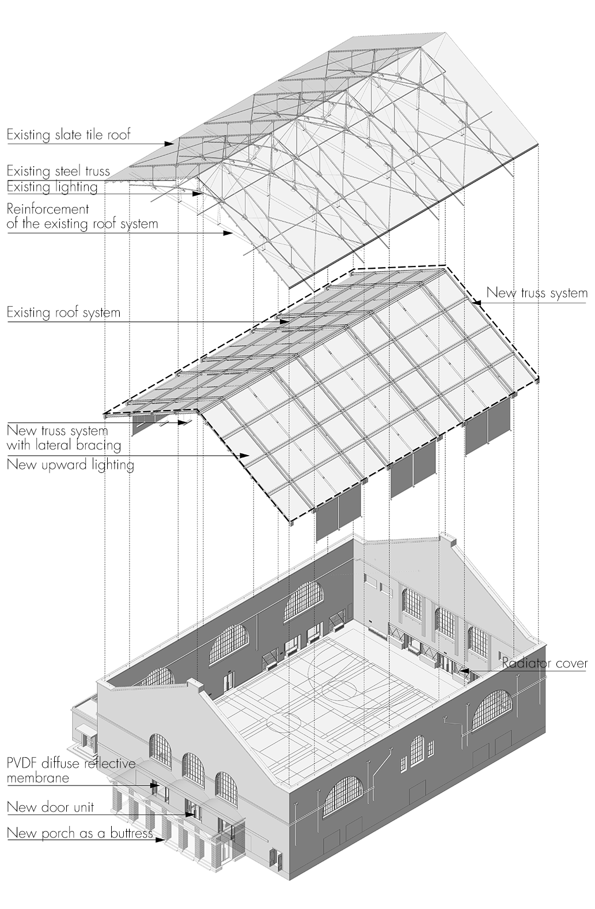
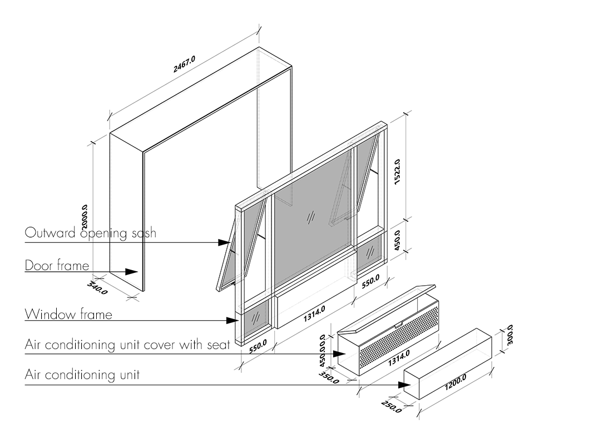

Tsinghua University West Gymnasium Renovation Design (March Capestone Project)
-
The project originates from an assessment study of the 3 recreational centers at Tsinghua University. Based on the assessment findings, the Tsinghua West Gymnasium is selected for renovation. The assessment concluded that the entrance space and foyer of the West Gymnasium lack spatial appeal, the main sports hall has low color vibrancy, and the spatial openness is limited. Additionally, in terms of task execution, the complex visual environment in the main sports hall reduces the efficiency of decision-making during activities. Therefore, the renovation measures are divided into 3 aspects: enhancing the attractiveness of node spaces, improving the experience in the main sports hall, and optimizing the task efficiency in the main sports hall.
1.Enhancing the Attractiveness of Node Spaces
At the entrance near the corner, a greenbelt is added, and the air conditioning units are concealed with gray wire mesh covers. The stair steps leading to the second floor are redesigned with reflective materials applied to the risers, and LED soft membrane lighting is installed in the second-floor ceiling. The partition wall between the corridor and stair space leading to the foyer is removed, and a cultural information area is set up along the first-floor wall, primarily in blue tones. This enhances both spatial orientation and the sense of intrigue.
The foyer's front wall is rebuilt with terracotta brick cladding, adopting an open curtain wall system. Transparent acrylic panels are fixed above the terracotta brick system to display cultural information of the West Sports Hall. The first window on the east side of the foyer is transformed into a door connecting to the corridor. The door system is redesigned, with non-essential office space doors using the same color as the interior space interfaces. The door leading to the front hall is replaced with a wood-framed glass door, and the baseboard decoration is simplified from the original design. The information desk area is relocated to enhance the attraction of the corridor's view.
The corridor connecting the front and rear halls is widened, and the skylight is redesigned to maximize the effect of soft northern daylight, improving the appeal of the passage space. Portions of the walls are opened to form a landscape interaction with the southern courtyard. Based on behavioral research needs, additional seating is added in the corridor to meet the demand for waiting and resting. Vending machines are positioned in the middle of the corridor.
The main measures to enhance the experience in the main sports hall include:
2.Enhancing Spatial Permeability and Color Vibrancy in the Main Venue
To address the sense of oppression created by the narrow perception of the second-floor track in the West Gymnasium, the design proposes to open up the eastern and western interfaces. Additionally, the arched windows connecting the front and middle halls will be opened, with vines wrapping around the interior of the middle hall to reduce spatial pressure. The color of the reinforced steel structure in the front hall will be brightened to create a more vibrant atmosphere. The eastern wall will also be reinforced to open up the eastern interface, allowing for spatial permeability with the western gymnasium.
In the rear hall of the West Gymnasium, the interface between the badminton court and the attached gym will be opened. The gym's roof will be equipped with skylights, and wall windows will be added on the north and south sides to introduce more natural elements into the overall environment. Two new aerobic exercise and table tennis zones will be constructed on the north and south sides of the rear hall, with their structure serving as buttresses to reinforce the overall structure of the West Gymnasium.
Perforated panels will cover the heating units, with colors transitioning from yellow-green to blue-green to add visual interest and establish a connection with the outdoor environment.
3.Redesign the Visual Guidance Interfaces and Cultural Information System
Due to the dual significance of the West Sports Hall at Tsinghua University, serving both as a renowned historical landmark and a fitness facility for students and faculty, its visual identity system is divided into three categories.
First, it showcases the historical development of the West Gymnasium and Tsinghua's sports culture, using the space as a medium to display historical information. Second, it provides wayfinding guidance within the gymnasium, including the locations of various sports venues, restrooms, and the honor room. Third, it presents current venue usage information, such as event schedules, coach introductions, and bookings.
Based on these 3 aspects, the wayfinding and cultural information systems for the West Gymnasium at Tsinghua University are restructured, forming a design system that better aligns with the overall spatial environment.
The main measures to improve the task efficiency in the primary sports hall include:
4. Integrating Visual Elements of the Main Venue Space
In response to the excessive environmental pressure identified in the ERP assessment of the West Sports Hall's front hall, the following design interventions are proposed to reduce the visual elements of the space:
Repainting and Adding Visual Barriers: The railings and protective nets on the second-floor track will be painted white. Additionally, a white translucent panel will be added behind the railing handrails, and an opaque white panel will be placed behind the basketball hoop’s handrails.
Integrated Design for Impact Pads: The impact pads will be redesigned as a unified element, covering the entire doorframe area on the first floor. Pattern designs will be added to the impact pads to balance the attention drawn by other spatial elements.
Concealing Heating Units: Some heating units will be embedded in a 1.4-meter underground pipe layer. The flooring around the core venue will be replaced with wood, and the heating vents will be redesigned. Remaining visible heating units will be covered with paneling.
Simplifying Window Treatments: The original deep red curtains will be replaced with white automatic roller blinds, creating a visual connection with the ceiling and simplifying the color scheme of the space.
5. Improving the Lighting Environment of the Main Venue
In response to the lighting issues identified in the EEG and SD assessments of the West Sports Hall rear hall, the following adjustments are made: Install PVDF diffuse reflective membrane blinds on the existing roof structure, and reposition the lighting fixtures to direct upward light onto the reflective material, creating an evenly distributed diffuse lighting environment. Given the multi-scenario usage of the rear hall, the original lighting setup will be retained.
For the front hall, the following adjustments will be made to improve the lighting environment: Replace the original arched window glass with specially sintered translucent glass to reduce glare. Install a semi-transparent automatic shading roller blind system at the existing skylight location and replace the current deep red curtains with white blackout curtains. -
Design Type: Human Centered Design, Architecture Design, Visual Guidance Interface Design
Project Type: Master Capestone Project, School of Architecture, Tsinghua University
Time: 2024.2-2024.5
Instructor: Prof.ZHUANG Weimin, Senior Engineer REN Fei
Collaborator: Individual Work
Main Contributions:
1. Conduct site survey and mapping of the West Sports Hall at Tsinghua University and create a 3D model based on existing materials;
2. Integrate and redesign the wayfinding system for the West Sports Hall at Tsinghua University;
3. Increase the color vibrancy of the main space according to the assessment findings;
4. Control and appropriately reduce the variety of spatial elements based on the assessment conclusions.
Skill: rhino、AutoCAD、Adobe Illustrator、Adobe Photoshop、Abode Premiere、Enscape







